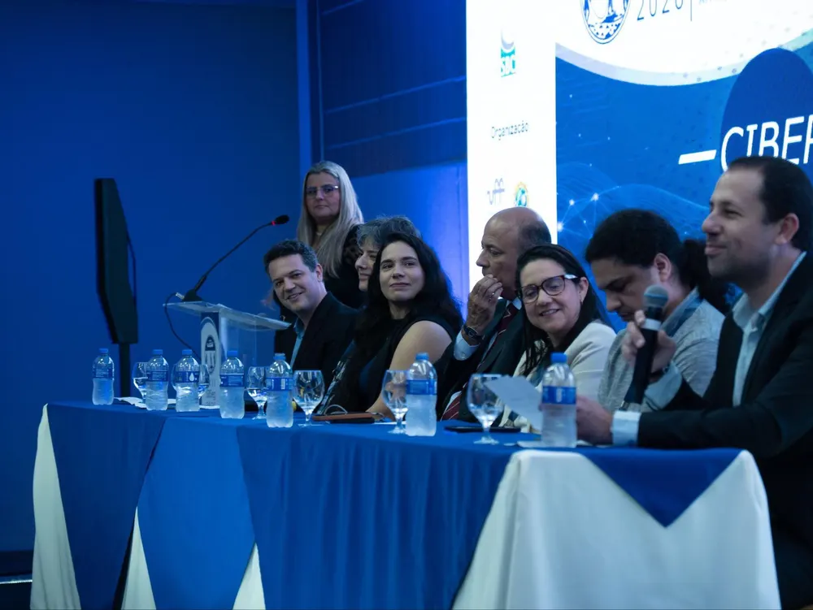
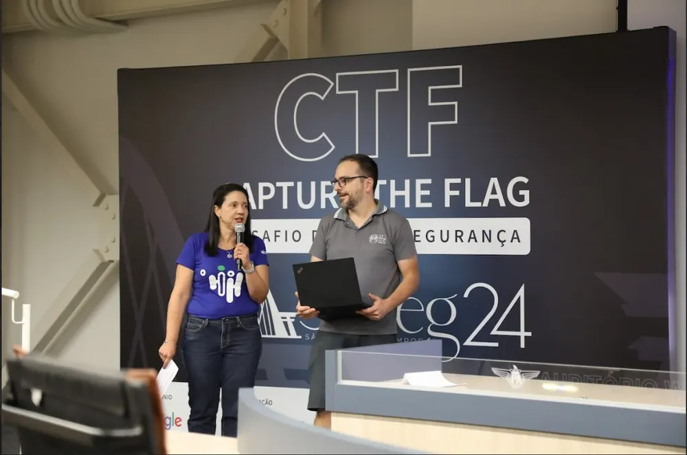
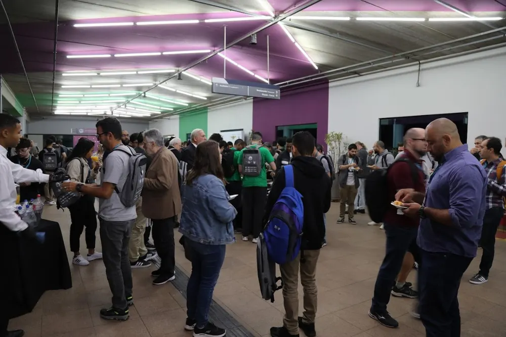
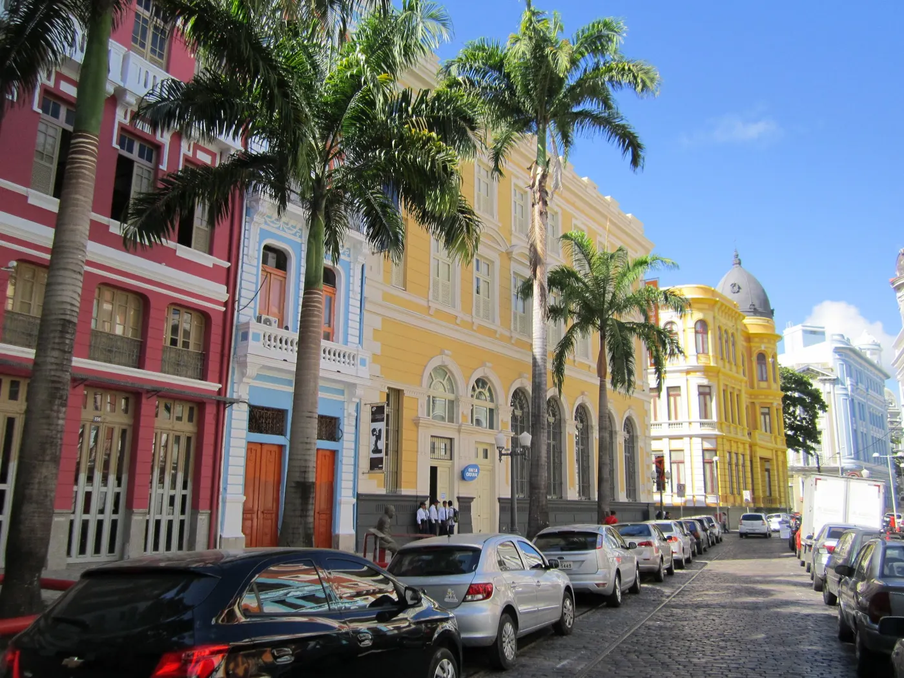
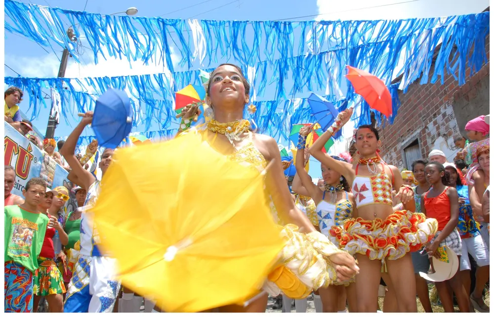
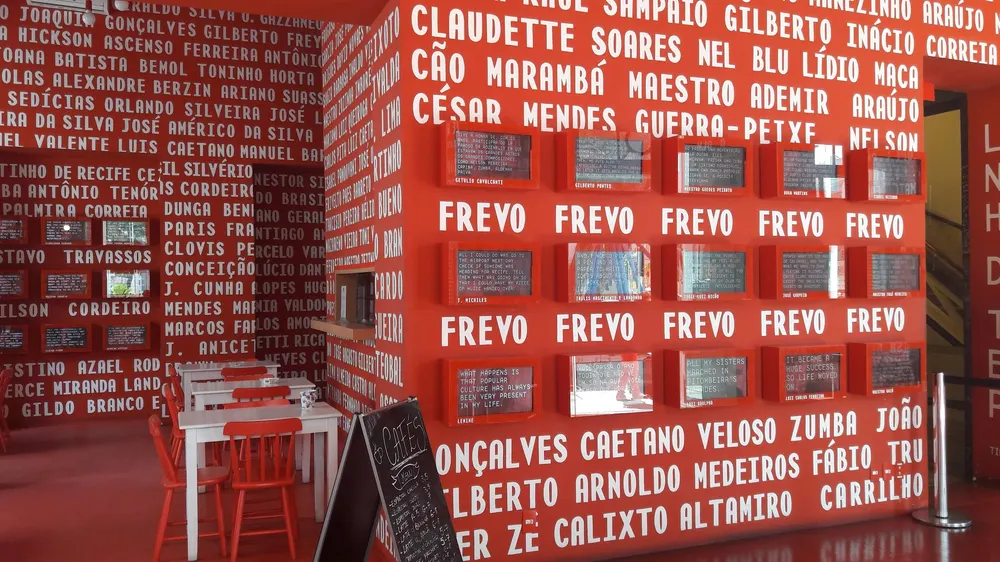
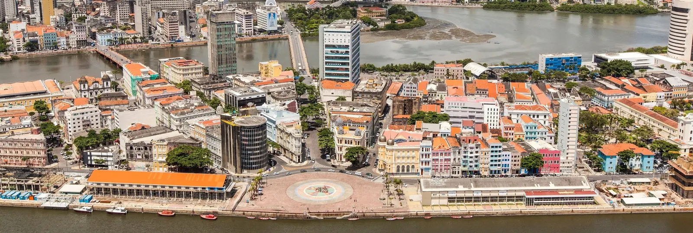

SBSeg 2027 XXVII Simpósio Brasileiro de Cibersegurança
IA e agentes de segurança para todos os segmentos
- Quando
- 30 de agosto a 2 de setembro de 2027
- Onde
- Recife, Pernambuco
- Sede
- Mar Hotel, Boa Viagem
IA para segurança e segurança da IA
Com a adoção em massa de IA e agentes, segurança deixou de ser assunto de especialistas: hoje é requisito para todos. As duas frentes estarão no centro do SBSeg 2027.
- Trilha IA e AgentesSessões técnicas, palestras e painéis dedicados ao tema.
- Desafio de AgentesAgentes autônomos de ataque e defesa competem no CTF.
- Minicursos práticosComo construir, avaliar e proteger agentes de segurança.
- Fórum da IndústriaEmpresas apresentam desafios reais de IA aplicada à pesquisa.
- Fórum de GestoresLideranças públicas e privadas discutem estratégia, risco e resiliência.
- Painel executivoGovernança, riscos e regulação do uso de IA.
O evento
O Simpósio Brasileiro de Cibersegurança (SBSeg), anteriormente denominado Simpósio Brasileiro em Segurança da Informação e de Sistemas Computacionais, é um evento científico realizado anualmente desde 2001 pela Sociedade Brasileira de Computação (SBC), sob responsabilidade da Comissão Especial de Cibersegurança (CESeg). É o principal fórum do país para divulgação de resultados de pesquisa, debates e intercâmbio de ideias em cibersegurança, reunindo pesquisadores, profissionais e estudantes da academia e da indústria. O evento é classificado como Qualis A4 pela CAPES.
A 27ª edição terá sessões técnicas, minicursos, workshops, Trilha da Indústria, CTF, Salão de Ferramentas, concurso de teses e dissertações e palestras de convidados de renome internacional.
A edição de 2026, em números
- participantes presenciais
- 356
- trabalhos submetidos em todas as trilhas
- 249
- de aceitação na trilha principal
- 29%
- edições anuais desde 2001
- 26



Chamadas
Todas as chamadas são prévias baseadas nas chamadas de 2026. Datas, coordenação, comitês e endereços de submissão de 2027 ainda serão definidos e podem mudar até a publicação oficial.
Trilhas e concursos
- Trilha Principal: artigos completos e curtos.
- Trilha IA e Agentes: novidade em 2027, chamada a publicar.
- Trilha de Interação com a Indústria e de Inovação
- Minicursos
- SF: Salão de Ferramentas.
- CTDSeg: Concurso de Teses e Dissertações em Cibersegurança.
- CTF: competição Capture The Flag, com o Desafio de Agentes; regulamento a publicar.
Workshops
- Chamada de propostas de workshops
- WTICG: Workshop de Trabalhos de Iniciação Científica e de Graduação.
- WISE: Mulheres Brasileiras em Cibersegurança.
- WGID: Workshop de Gestão de Identidades Digitais.
- WQuSec: Workshop de Cibersegurança e Computação Quântica.
- WCIA: Workshop de Cibersegurança em IA.
Datas importantes
- Registro dos resumosa definir
- Submissão dos artigosa definir
- Notificação de aceitaçãoa definir
- Versão finala definir
- Realização do simpósio30 de agosto a 2 de setembro de 2027
Datas da Trilha Principal. As demais datas serão publicadas em cada chamada.
Recife: onde tecnologia e cultura se encontram
A capital pernambucana une um dos maiores polos de tecnologia do país ao frevo, ao maracatu e ao casario colorido do Recife Antigo.




- Porto DigitalUm dos maiores parques tecnológicos do país, no coração do Recife Antigo.
- Academia forteO Centro de Informática da UFPE é referência nacional em computação.
- Ecossistema vivoCESAR, startups e empresas de software e segurança, ao som do frevo.
Local do evento
O SBSeg 2027 acontece no Mar Hotel, no bairro de Boa Viagem, na zona sul do Recife, conhecido pela praia urbana de mesmo nome.
Informações sobre como chegar, hospedagem com tarifa especial, mobilidade e passeios serão divulgadas pela comissão organizadora.


Patrocine o SBSeg 2027
Leve sua marca a quem pesquisa, desenvolve, contrata e opera cibersegurança no Brasil: estudantes, profissionais do mercado, governo, forças armadas e pesquisadores de referência.
- TalentoRecrutamento direto com os melhores estudantes, no CTF e nos minicursos.
- MarcaNaming rights, trilha principal, crachás, site, redes sociais e sinalização.
- VitrineStands, Salão de Ferramentas e palestras na Trilha da Indústria.
- Conhecimento e P&DConteúdo de fronteira e projetos de pesquisa com a academia.
- RelacionamentoCoffees, jantar do evento e o novo Fórum de Gestores.
- Impacto e ESGWISE, bolsas de viagem e isenções de inscrição para estudantes.
Cotas
| Cota | Investimento | Inclui |
|---|---|---|
| Bronze | R$ 10 mil | Logo no site, nas redes e na sinalização; 1 inscrição cortesia. |
| Prata | R$ 20 mil | Coffee e networking, iniciação científica, Salão de Ferramentas; 2 inscrições cortesia. |
| Ouro | R$ 50 mil | Stand próprio, palestra ou demo na Trilha da Indústria, minicursos e oficinas; 4 inscrições cortesia. |
| Diamante | R$ 100 mil | Trilha principal e destaque na abertura, vaga no Fórum de Gestores; 8 inscrições cortesia. |
| Estratégico | Sob consulta | Anfitrião do Fórum de Gestores, projetos de P&D com a academia, pacote sob medida. |
Ativos adicionais, como naming rights do CTF ou do CTDSeg, jantar do evento, bolsas de viagem e cotas temáticas de IA, podem ser combinados com qualquer cota. Para receber o plano de patrocínio completo, fale com o Comitê de Patrocínio do SBSeg 2027 (contato a definir).
Organização
- Realização
- Sociedade Brasileira de Computação (SBC)
- Promoção
- Comissão Especial de Cibersegurança (CESeg)
- Organização local
- a definir
- Coordenação geral e do comitê de programa
- a definir